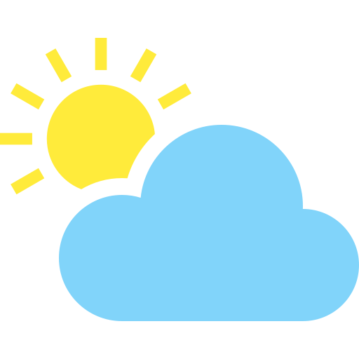

Data
Location: Southern Chile, Patagonia
Population: 60,000 (Aysén Region).
Climate: Cold winters, mild summers; high rainfall.
Economy: Agriculture, livestock, fishing, tourism.
Attractions: Carretera Austral, Queulat National Park, General Carrera Lake.
Weather
Climate: Oceanic, with cold winters and mild summers.
Temperatures: 10°C
wind: 20 km/h
Wind Chill: